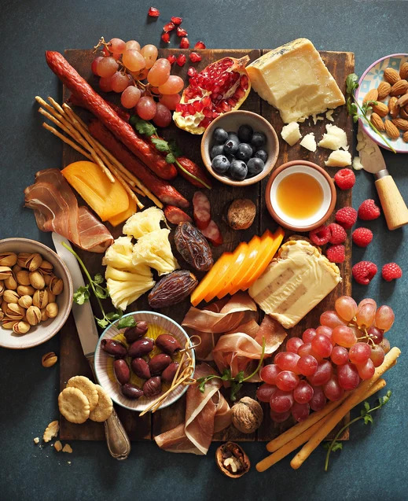
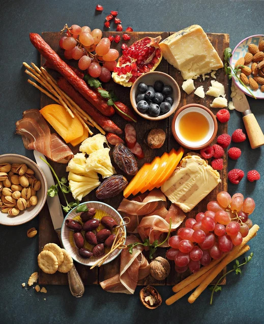
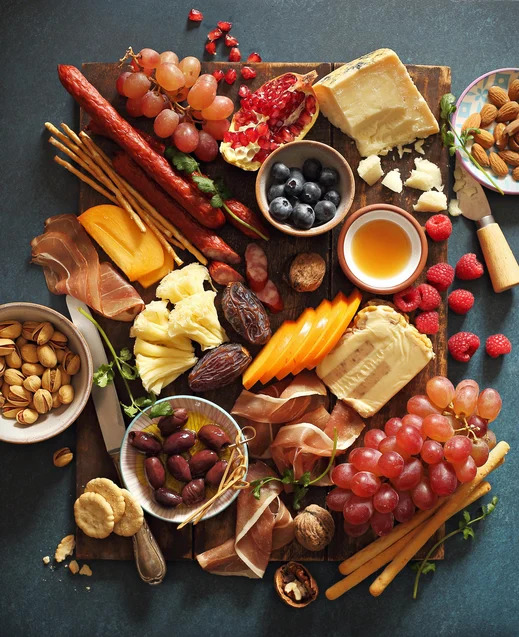

Produtos lácteos e cárneos artesanais, elaborados com tempo, técnica e ingredientes nobres. Nossa missão é elevar a experiência gastronômica através de alimentos produzidos em pequenos lotes com alma, precisão e profundo respeito ao tempo de cura.

Email: contato@suaempresa.com
Instagram: @suaempresa
WhatsApp: (XX) XXXXX-XXXX